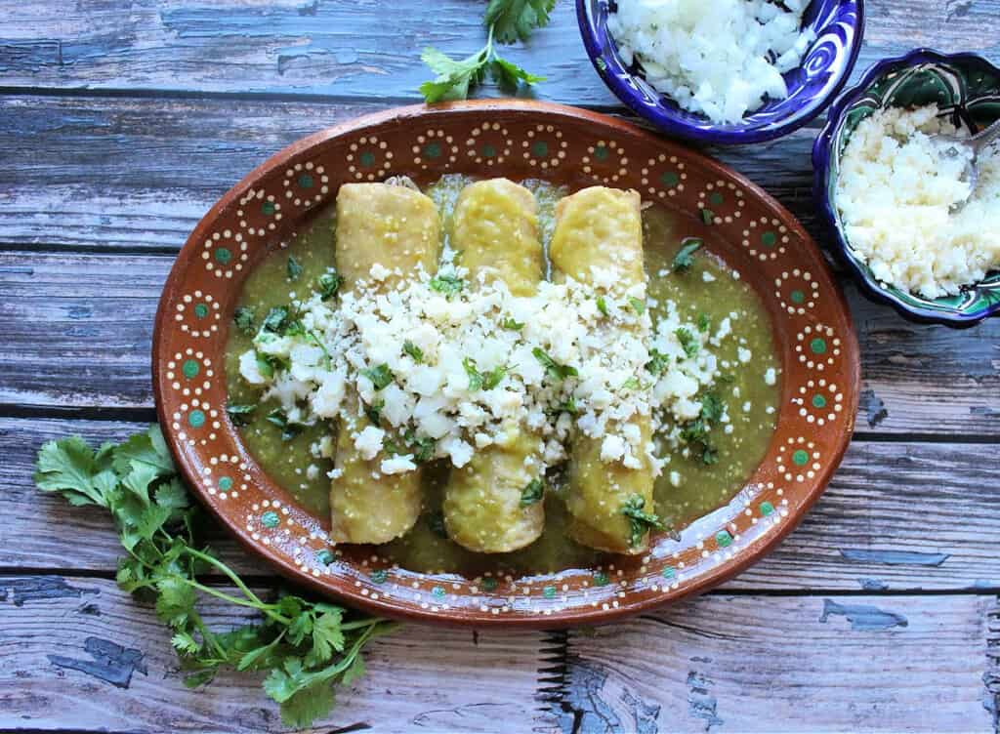

Enchiladas Verdes de Pollo
Origin: Mexico Category: Main Dish This is one of my favorite dishes to eat, especially my mother’s recipe but I do not know it or have access. There are a variety of recipes to make this dish and this happens to be different from my mother's because she does not place the enchiladas in the oven. I still think that it is a good recipe that should get you something similar.
Recipe Ingredients
- 2 lbs tomatillos (about 16 tomatillos)
- 4 serrano peppers (stem removed)
- 2 garlic cloves
- ¼ onion roughly chopped
- 4 cups water (enough to cover the tomatillos)
- 1 bunch cilantro
- 1 teaspoon salt
- 1 tablespoon olive oil
- 1 cup canola oil
- 2 cups shredded chicken
- 12 corn tortillas
- crema Mexicana as desired
- crumbled queso fresco (or cotija)
- diced raw onion as desired
- chopped cilantro as desired
Recipe Steps
- Place the tomatillos, garlic, serranos, onion, and water in a stockpot.
- Cover and bring to a boil.
- Simmer for 7-10 minutes.
- Discard water.
- Remove the ingredients from the stock pot and into the blender.
- Add salt and cilantro to the blender.
- Blend until smooth.
- Heat up oil in the same stock pot used to cook the salsa.
- Pour in the salsa verde and cook for 10 minutes.
- Stir occasionally.
- Heat up oil in a frying pan.
- Fry the tortillas. 1 minute on each side.
- Place on a paper towel to drain any excess oil.
- Repeat with all the tortillas.
- To assemble, place a tortilla in a baking dish, and using your best judgment add about 2 tbsps shredded chicken.
- Roll up the tortilla.
- Make sure the seam side is down.
- Repeat until with the remaining tortillas.
- Heat up the oven to 375 degrees F.
- Cover the tortillas with aluminum foil and place in the oven.
- Bake for 15 minutes.
- Keep in a warm oven until ready to serve.
- Pour a generous amount of the salsa verde on the plate.
- Add the chicken enchiladas to a plate.
- Pour more sauce on top.
- Add the desired toppings – crema Mexicana, queso fresco, cilantro, and onion.
Additional Food images